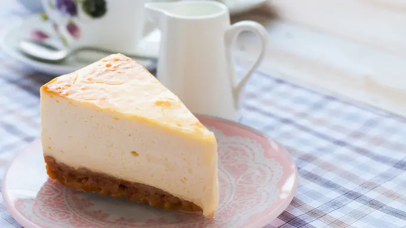

Cheesecake adalah kue yang biasanya dimakan sebagai hidangan penutup, dibuat dengan mencampurkan keju yang bertekstur lembut, telur, susu, dan gula.
Ingredients
- 120 gram tepung terigu
- 120 gram gula pasir
- 100 gram margarin
- 3 butir telur ayam
- 1 sdt emulsifier (SP/ovalet)
- 1 sachet susu kental manis
- 1 sachet susu bubuk
- 75 gram kedu cheddar parut
Langkah-Langkah:
- Lelehkan margarin bersama keju cheddar parut, aduk sampai rata. Sisihkan.
- Gula, telur dan emulsifier di-mixer sampai kaku, putih dan berjejak.
- Tambahkan terigu, susu bubuk, dan susu kental manis. Aduk dengan teknik aduk balik.
- Masukkan margarin dan keju yang sudah dilelehkan, aduk balik sampai tercampur rata.
- Siapkan loyang yang sudah diolesi margarin dan dialasi kertas roti. Tuang adonan ke dalam loyang.
- Kukus sekitar 25-30 menit, lakukan tes tusuk untuk memastikan kematangannya.
- Lepaskan dari cetakan, dan cheese cake siap dihidangkan.